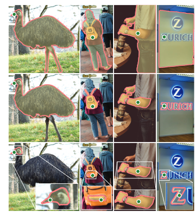

语义分割与SAM精读
原论文地址：[2304.02643] Segment Anything (arxiv.org)
缺少的部分暂时不更，感觉不是那么重要。
语义分割
语义分割是对像素粒度的分类，是一种dense classification的任务。常用于医学与自动驾驶领域
语义分割的结果也可以作为对图像的抽象表达，提取更有代表性的特征，作为其他任务的输入。
语义分割数据集
PascalVOC
Cityscape(主要用于自动驾驶)
语义分割模型
FCN：可以适应任意输入大小。主要有基于UNet和基于带孔卷积两种类型。
U-Net:下采样丢掉冗余信息。
带孔卷积：conv与pool可以扩大感受野，减少计算量，提高特征的提成程度。但其过程本身就会丢失信息。带孔卷积不对输入进行密集采样，而是使用间隔若干位置采样的方式，在不丢失信息的前提下，提升感受野的大小，带来更好的信息提取能力。
Transformer+语义分割：ViT一开始感受野就是全局图像
交互式分割
交互式分割：由用户提供少量交互完成对目标物分割的操作。交互的种类可以有多种，包括点击(point)，划线(text)，画框(box)等。
为何要用交互式分割：在传统的标注工具中，比如LabelMe和LabelImage中，需要大量的时间进行极为小心的操作，费事费力。交互式分割算法能够使用有限次的点击，完成图片的标注，提升效率降低成本。
SAM
图 1：我们志在通过引入三个相互关联的组件来构建分割的基础模型：可提示的分割任务、支持数据注释并通过提示工程zero-shot迁移到一系列任务的分割模型 (SAM)，以及用于收集数据的引擎 SA-1B ，其包含10亿个mask。
- 整体结构基于Transoformer进行开发，针对分割任务进行了修改。
- 将NLP中的prompt范式引入到了CV领域中，进一步统一了不同任务和数据模态之间的特点。
- 支持基于零样本的分割。
- 统一了分割的下游应用，说明了CV领域也存在大模型的可能。
摘要
该项目构建了迄今为止最大的分割数据集，在1100 万张的图像上包含超过10 亿个masks。SAM的模型被设计为可以提示的，因此它可以通过zero-shot迁移到新的任务上。SAM的zero-shot能力可以与之前的完全监督结果相媲美甚至优于之前的结果。demo网址:https://segment-anything.com.
1.引言
NLP任务通过提示工程实现了强大的零样本和少样本泛化能力，将基础模型推广到训练期间没见过的任务和数据分布。使得一些模型的零样本和少样本性能与微调模型相比出奇更好。
计算机视觉领域也对基础模型进行了探索，尽管在视觉和语言编码器方面取得了很大进展，但计算机视觉还包含超出此范围的很多问题，造成这些问题的原因再于没有丰富的训练数据。
在这项工作中，我们的目标是建立图像分割的基础模型。它是一个可提示的模型，在广泛的数据集上对其进行预训练并具有强大泛化能力。通过该模型，我们可以使用提示工程解决一系列新数据分布的下游分割问题。
该项目的成功取决于三个组成部分：任务、模型和数据。我们解决了以下有关图像分割的问题：
- 什么任务将实现零样本泛化
该任务要足够通用，可以提供强大的预训练目标并支持广泛的下游应用程序。
- 对应的模型架构是什么
该模型要支持灵活的提示，并能在提示时实时输出分割的mask以允许交互使用
- 哪些数据可以为该任务和模型提供支持
该项目需要多样化的大规模数据源。但是没有网络规模的用于分割的数据源，因此我们构建了一个“数据引擎”，使用高效模型协助数据收集的同时，使用新收集的数据改进模型。
任务(第二章)：受NLP工作的启发，我们提出了提示分割任务，其目标是在给定任何分割提示的情况下返回有效的分割掩码（见图 1a）。有效输出掩码意味着，即使提示不明确并且可能引用多个对象（例如，衬衫上的点可能表示衬衫或穿着它的人），输出也应该是合理的掩码至少其中一个对象。我们使用提示分割任务作为预训练目标，并通过提示工程解决一般下游分割任务。
模型(第三章)：实时的分割任务和实际使用约束了模型架构。这意味着该模型必须支持灵活的prompt，需要实时计算mask以允许交互使用，而且必须具有模糊性意识。SAM可以同时满足这三种约束，它包括强大的图像编码器来计算图像embedding，提示编码器来emedding提示，然后将两个信息源组合在预测分割mask的轻量级maskdecoder中。这种架构使得使得可以通过不同的提示来重复使用相同的图像嵌入。为了使 SAM 能够感知歧义，我们将其设计为预测单个提示的多个掩码，从而使 SAM 能够自然地处理歧义，例如衬衫与人的示例。
数据引擎(第四章)：为了实现强泛化能力，有必要在大量且多样化的掩模上训练 SAM，超出任何现有的分割数据集。虽然基础模型的典型方法是在线获取数据，但掩码并不丰富，我们的解决方案是构建一个“数据引擎”，其分为三个阶段：辅助手动、半自动和全自动。(见官网demo)
- 第一阶段，SAM 协助注释者注释掩模，类似于经典的交互式分割设置。
- 第二阶段，SAM 可以通过提示可能的对象位置来自动为对象子集生成掩码，而注释器则专注于注释其余对象，从而帮助增加掩码多样性。
- 最后阶段，我们使用前景点的规则网格来prompt SAM，每张图像平均可以产生100个高质量掩模。
数据集(第五章)：
我们的最终数据集 SA-1B 包含来自 1100 万张得到许可和隐私保护图像的，超过1B个掩模（见图 2）。 SA-1B 使用我们数据引擎的最后阶段完全自动收集，其掩码比任何现有分割数据集多400 倍。我们希望 SA-1B 成为旨在构建新基础模型的研究的宝贵资源。

图 2：SA-1B带有叠加mask的示例图像。 SA-1B包含11M多样化、高分辨率、许可和隐私保护图像和1.1B高质量分割掩模。这些mask由 SAM 完全自动注释，它们具有高质量和多样性。我们根据每张图像的掩码数量对图像进行分组以进行可视化（每张图像平均有100 个掩码）。
Responsible AI(第六章):
实验(第七章)
发布：
2.分割任务

3.模型架构
图 4： SAM概述。图像编码器输出图像嵌入，然后可以通过各种输入提示有效地查询该图像嵌入，以快速生成对象蒙版。对于多个对象的不明确提示，SAM 可以输出多个有效掩码和相关的置信度分数。
SAM 具有三个组件，如图 4 所示
- 图像编码器image encoder:ViT16/H+MAE
- 灵活提示编码器Prompt Encoder
- 快速掩模解码器Mask Decoder
模型建立在 Transformer 视觉模型的基础上，并针对实时性能进行了特定的权衡。附录A中提供了详细信息。
图像编码器：使用 MAE预训练的视觉变换器 (ViT) 最低限度地适应处理高分辨率输入。图像编码器每张图像运行一次，并且可以在prompt之前应用。
MAE:类似于提升模型泛化能力的一种策略,不要理解为一种模型
别再无聊地吹捧了，一起来动手实现 MAE(Masked Autoencoders Are Scalable Vision Learners) 玩玩吧！ - 知乎 (zhihu.com)
- 将输入的patch随机mask，只将unmasked的patch输入Encoder中进行编码
- 使用mask token填充被mask的patch，并输入到decoder中，对输入进行复原
让模型通过随机采样掌握全局特征，push模型去具有这个能力。mask即缓解了信息的冗余，同时不同patch之间的合作得到进一步强化，慢慢地引入了对于图像当中某个局部的信息提取能力。
提示编码器：考虑两种提示：稀疏（点、框、文本）和密集（掩模）。通过位置编码来表示点和框，使用 CLIP中现成的文本编码器对每种提示类型和自由格式文本进行学习嵌入。使用卷积来embedding密集提示（即掩码），并与图像嵌入按元素求和。
掩码解码器：掩码解码器有效地将图像嵌入、提示嵌入和输出token映射到mask。该设计在Transformer 解码器块后跟动态掩模预测头。我们修改后的解码器块使用两个方向的prompt自注意力和交叉注意力（prompt图像嵌入，反之亦然）来更新所有嵌入。运行两个块后，我们对图像嵌入进行上采样，并且MLP 将输出token映射到动态线性分类器，然后计算每个图像位置的mask前景概率。
解决歧义：对于一个输出，如果给出不明确的提示，模型将对多个有效masl进行平均。为了解决这个问题，我们修改模型以预测单个提示的多个输出掩码(见图 3)。我们发现 3 个掩码输出足以解决最常见的情况(嵌套mask通常最多三层深度：整体、部分和子部分)。在训练期间，我们仅反向传播mask上的最小损失。为了对掩模进行排名，模型预测每个掩模的置信度得分(IoU)。效率。整体模型设计很大程度上是出于效率的考虑。给定预先计算的图像嵌入，提示编码器和掩码解码器在 Web 浏览器中的 CPU 上运行，耗时约 50 毫秒。这种运行时性能可以为我们的模型提供无缝、实时的交互式提示。
损失和训练。我们使用focal loss和dice loss的线性组合来监督掩模预测。我们使用geometric prompts的混合来训练可提示的分割任务（有关文本提示，请参见第 7.5 节）。我们通过在每个掩码中随机采样11 轮提示来模拟交互，从而使SAM能够无缝集成到我们的数据引擎中。
4.数据引擎
5.数据集
8.讨论
附录
A.模型与任务细节
1.Image encoder。Image encoder可以是任何输出 C×H×W image embedding的网络。出于可扩展性和强大的预训练的考虑，我们使用MAE预训练的 Vision Transformer (ViT) 在最小调整的情况下来处理高分辨率输入，特别是具有 14×14 窗口注意力的 ViT-H/16和四个等距的全局注意力块。图像编码器的输出是输入图像缩小了16倍的embedding。由于我们的目标是实时处理每个提示，因此我们可以承受大量的图像编码器 FLOPs，因为它们每个图像而不是每个提示计算一次。
我们使用通过重新缩放图像并填充短边以获得获得1024×1024分辨率的输入图像。因此图像嵌入是 64×64。为了减少通道维度，我们使用 1×1 卷积来获得 256 个通道，然后使用同样具有 256 个通道的 3×3 卷积。每个卷积后面都有一个Layer Norm。
2.Prompt encoder：
稀疏的prompt映射为256维向量嵌入：
- point被表示为该点的位置编码+两个可学习embedding之一，这两个可学习embedding表示该点是在前景(鼠标左键点击)还是背景(鼠标右键点击)。
- box由嵌入对表示：左上角的位置编码+用于表示“左上角”这个含义的可学习嵌入；右下角的位置编码+用于表示“右下角”这个含义的可学习嵌入。
- 自由格式的text：使用 CLIP 中的文本编码器（通常任何文本编码器都是可能的）。我们将在本节的其余部分重点讨论几何提示，并在附录D.5 中深入讨论文本提示。
密集的prompt（即mask）与图像具有空间对应关系。输入的mask的大小是原始图像的4倍下采样，然后使用输出通道分别为 4 和 16 的两个 2×2、步长 2 卷积将分辨率再缩小 4 倍。最终的 1×1 卷积将通道维度映射到 256。每一层都由 GELU 激活和层归一化分隔。然后按元素添加mask和image embedding嵌入，如果没有mask prompt，则将表示“无mask”的可学习嵌入添加到每个图像嵌入位置。
3.轻量级mask decoder。该模块有效地将图像嵌入和一组提示嵌入映射到输出掩码。为了结合这些输入，我们从 Transformer 分割模型 [14, 20] 中汲取灵感，并修改标准 Transformer 解码器。在应用解码器之前，我们首先将学习的输出标记嵌入插入到提示嵌入集中，该输出标记嵌入将在解码器的输出中使用，类似于[33]中的[class]标记。为了简单起见，我们将这些嵌入（不包括图像嵌入）统称为“tokens”。
图 14：轻量级mask decoder。两层解码器通过交叉注意力更新图像嵌入和提示标记。然后，图像嵌入被放大，更新的输出标记用于动态预测掩模。 （为了图形清晰，未示出：在每个注意层，位置编码被添加到图像嵌入中，并且整个原始prompt tokens（包括位置编码）被重新添加到标记查询和键中。）
图中image embedding的大小为,由于使用的模型是ViT16/H，意味着原始输入的图像大小为.有多少个prompt就有多少个pronmpt tokens，所以大小为。
- self attention从最简单的角度来讲就是对于已有内容的一次整合。self attention前后维度的大小是不变的，这意味着self attention的含义是输入一些东西，用其他的信息去描述它，然后输出描述的结果。对于ViT而言，输入是一些图像patch，对于每一个patch在self attention之后的结果是包含他和其他所有patch的信息的和，但是对于不同patch的信息的权重有所不同，v对应每个patch所包含的信息，qk决定了权重。
- image to token attn与token to image attn是image embedding与token做了两个方向的cross attention，用于交互信息。那为什么直接将image embedding与token一起做self attention呢，一种看法是因为self attention的复杂度为，会导致计算成本很大。这说明模型结构的设计有时候要考虑一些计算成本上的因素。尽管降低了计算成本，但由于不是做self attention，在image embedding与token做交叉注意力时可会污染彼此，相互加入一些本身没有的信息。再交互信息之后，更新全部内容对于token进行一次额外的cross attention，分别映射得到score和用于分割的representation。
- 上述representation与上采样的image embeding进行点积得到mask。
- 采用多个output token对应不同的场景(whole,part,subpart)，例如图四最右侧的剪刀。之所以这么做是因为如果不告诉prompt要在多的场景上去做分割，效果可能不会太好
我们的解码器设计如图14所示。每个解码器层执行 4 个步骤：
-
对token进行self attention
-
从token（作为query）到图像嵌入的交叉注意力。token如果作为query，那么image embedding则作为kv，这意味着信息流的方向是从image embedding到token的，与原图中相反。所以这里方向性是指对于每一个token去查看image embedding的信息，即由token指向image embedding。
-
逐点的的 MLP 更新每个token
-
从图像嵌入（作为query）到token的交叉注意力image embedding如果作为query，那么token则作为kv，这意味着信息流的方向是从token到image embedding的，与原图中相反。所以这里方向性是指对于每一个image embedding去查看token的信息，即由image embedding指向token。
最后一步使用prompt信息更新图像嵌入。在交叉注意力过程中，图像嵌入被视为一组 个256维向量。每个自/交叉注意力和 MLP 在训练时都有一个残差连接、层归一化和 0.1 的 dropout。下一个解码器层从上一层获取更新的token和更新的图像嵌入。我们使用两层解码器。
为了确保解码器能够访问关键的几何信息，只要参与注意力层，位置编码就会被添加到图像嵌入中。此外，每当它们参与注意力层时，整个原始prompt token（包括它们的位置编码）都会被重新添加到更新的token中。这是由于对prompt token的几何位置和类型的强依赖性。
解后，我们使用两个转置卷积层对更新后的图像嵌入进行 4 倍上采样（现在相对于输入图像缩小了 4 倍）。然后，token再次与image embedding做交叉注意力，我们将更新后的输出token embedding传递给小型 3 层 MLP，该 MLP 输出与放大的image embedding的通道尺寸相匹配的向量。最后，我们用放大image embedding和 MLP 输出之间的空间逐点乘积来预测mask。
Transformer 使用的嵌入维度为 256。Transformer MLP 块的内部维度较大，为 2048，但 MLP 仅应用于相对较少（很少大于 20）的prompt标记。然而，在具有 64×64 图像嵌入的交叉注意力层中，为了提高计算效率，我们将查询、键和值的通道维度减少了 2 倍到 128。所有注意力层都使用 8 个头。用于升级输出image embedding的转置卷积为 2×2、步长 2，输出通道尺寸为 64 和 32，并具有 GELU 激活。它们通过层归一化分开。
SAM的一些Limitation和未来工作
Image Encoder：
- 使用ViT-H进行全局建模，可以充分提取整体特征，但是1.计算量过大2.会引入不相关的内容参与计算，产生虚构的局部信息关联，影响特征提取的效果。
举例：图中有一辆车和一个太阳，要做车的目标检测。用Image Encoder做编码的话，必然会导致太阳的信息加入到了车中，太阳光的信息可能会导致车的纹理细节变得奇怪，同时我们认为光晕是不带信息的噪声，因为其渐变且变化很慢，这会导致原本清晰的车辆细节可能会被盖掉一部分。加法本身这种操作会盖掉重要信息。QKV的本质就是加权求和，所以会盖掉特征，影响效果。会接一个softmax层，会导致本来不相关的信息联系到了一起。这是由于Image Encoder本身的架构所导致的
- 特征尺度不变，无法产生层级化的语义信息
特征尺度始终是N*d
Mask Decoder：
- 使用多个output来模拟不同场景，但是不同场景(whole,part,subpart)的定义没有直接给出，没有体现在output token中，需要模型自行学习，对于收敛速度和实际效果没有保障。
虽然对于meta来说有那个算力，但对于个人或者机构而言则不行
- 没有充分利用输入prompt和image embedding的对应位置关系，盲目进行双向的信息交互
即token to image attn中将image信息一股脑的丢给了token，没有考虑对应关系
- …
要把SAM当成一个标注工具，而不要当作单纯的模型来看。